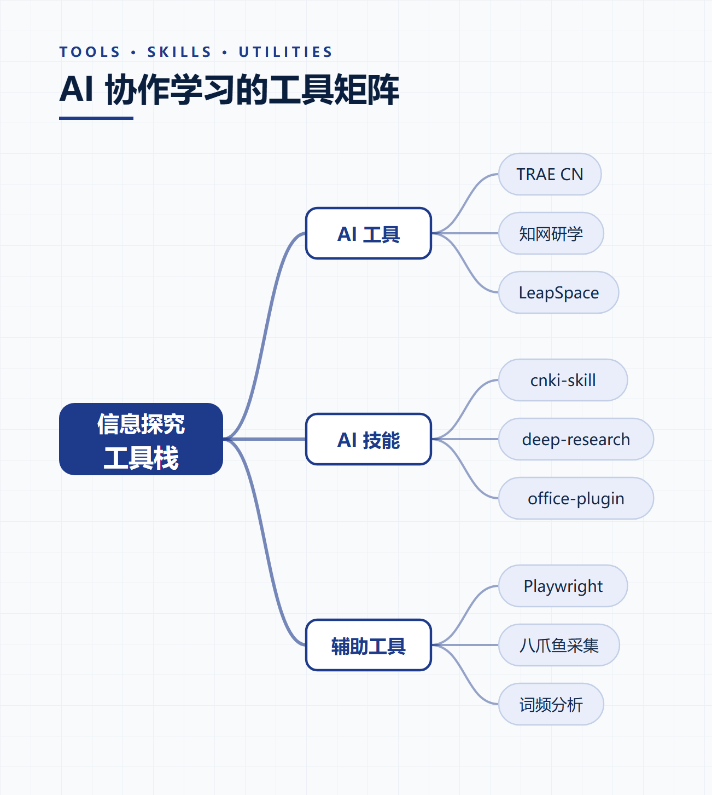
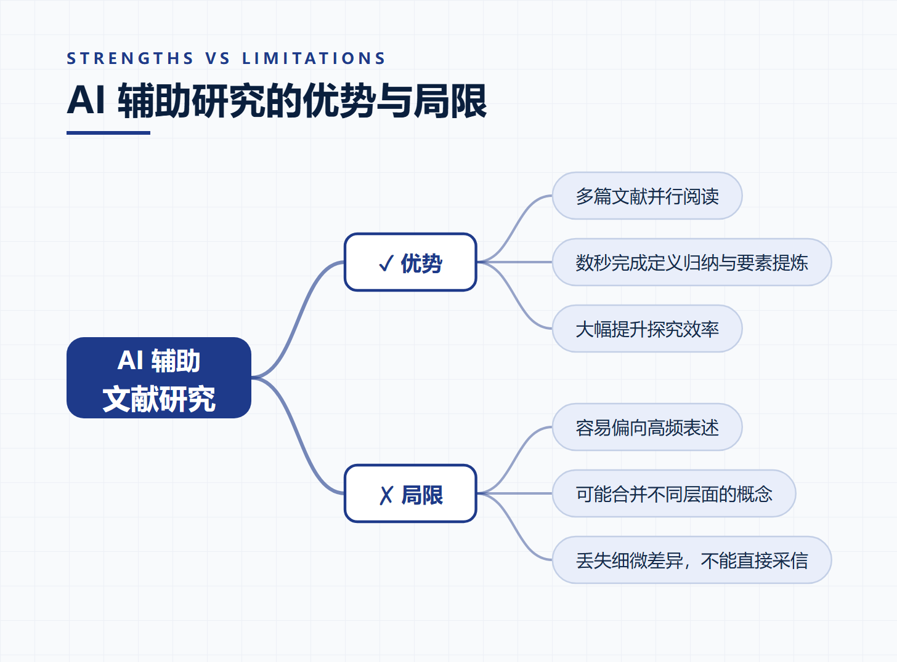
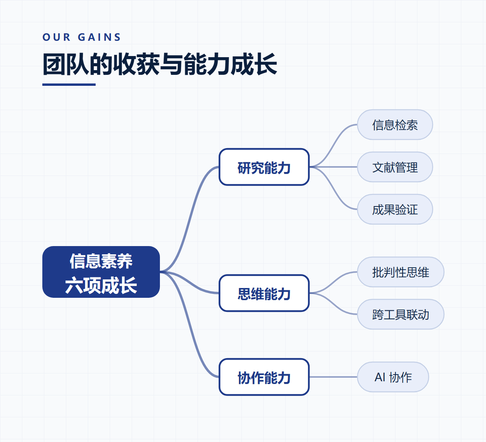

STEP 01 / 20
当我们打开短视频 APP —

抖音 · DOUYIN
哔哩哔哩 · BILIBILI
快手 · KUAISHOU
在解放碑跳了一晚上
08:42
我家猫终于会弹钢琴了
03:15
三分钟做好让女友流泪的面
06:28
虎跳峡徒步拍到了震撼日出
15:02
花三月工资买的手办 泪目
09:37
路人局一把 36 杀 能上职业吗
12:51
三分钟出门妆 手残党也能学会
05:19
这球不进我吃篮球 结果
04:06
零基础做纸笔筒 超治愈
07:44
在家做水晶花园 全家看傻了
08:09
飞下 30 度陡坡摔三次
11:23
70 年代法拉利 声浪值一套房
14:58
金毛把邻居家金毛带回来了
02:47
写四十年书法 压箱底家伙事儿
10:11
中国空间站实拍地球 泪目
08:32
大理客栈唱一晚上 老板免房费
04:55
花半年做外卖机器人 它居然
13:29
在家做三文鱼手握 比日料店好吃
06:04
信息大爆发
Information Overload,
内容却越来越窄
信息茧房
Filter Bubble
CHAPTER 02 · BRAINSTORM
先跟 AI
聊一聊
Let's talk it through —
我用 TRAE CN 里的 brainstorming 技能，
跟它一对一聊信息茧房这个现象。
CHANNEL 01
DURING · CONVERSATION
— 一对一对话 —
YOU什么是信息茧房？它是怎么形成的？
AI简单说，就是你点什么，平台就推什么……久而久之形成一个由兴趣和算法共同围成的窄圈。
YOU那我怎么验证自己真的被"茧"住了？
AI我给你几个可操作的验证方法……
什么是信息茧房？
简单说，就是你点什么，平台就推什么…
那怎么验证自己被"茧"住了？
好问题，我给你几个方法…
CHANNEL 02
AFTER · WHAT WE GOT
AI 帮我理出了
三步探究计划
01
文献查询
02
信息提取
03
结果验证
CHANNEL 03
CHAPTER 03 · RESEARCH
第二步
得找正经文献
Sources matter —
用 知网研学 + LeapSpace，在 AI 辅助下检索相关论文。
还让 Playwright 做了一张文献搜集表，整理得清清楚楚。
知网研学
LeapSpace
Playwright
CHANNEL 04
TOOL · PLAYWRIGHT
— 49 篇文献 —
35
中国知网 · 中文文献
14
LeapSpace · 外文文献
49
合计 · 文献搜集表
CHANNEL 05
STEP 03 · AUTOMATE
cnki-skill
自动下载 + 辅助阅读
AI-assisted reading —
把检索到的论文 ID 喂给 cnki-skill，它自动下载 PDF、
提取关键段落、高亮核心成因和概念定义。
Paper 01
✓
Paper 02
✓
Paper 03
70%
CHANNEL 06
EXTRACTED · THREE KEY CAUSES
提取了
三个核心成因
①
算法多样性不足—— 平台推荐模型偏好高频点击，主动筛选掉边缘内容
②
用户惰性强化—— 越看越窄 → 越窄越看，形成自我维持的窄圈
③
公共议题缺席—— 商业化推荐体系挤掉公共信息、多样性内容
CHANNEL 07
CHAPTER 04 · VERIFY
AI 工具有局限
所以我们再验证一遍
Further verification —
用 八爪鱼采集器 在知乎平台采集公众讨论，
印证我们从文献里得到的三个核心成因；
再通过分词工具生成 词频分布图。
八爪鱼采集器
知乎采集
词频分析
CHANNEL 08
MEASURE 01 · DIVERSIFY
措施 ①
给推荐加上多样性约束
Diversity constraint —
主动混入不同观点、不同来源、不同主题的内容
平台在推荐算法中加入多样性惩罚项，避免连续推荐同类内容
MEASURE 02 · UNDERSTAND
措施 ②
看懂算法为什么推给你
Know your algorithm —
怎么调整推荐 · 怎么关闭个性化推荐
理解推荐机理，才能有针对性地打破窄圈
MEASURE 03 · EXIT
措施 ③
主动跳出同温层
Step out —
刻意去看一点不同立场的内容
不要总点同一类信息，点一次不同立场，算法就会重新学习
MEASURE 04 · GOVERN
措施 ④
平台侧治理
Platform-level governance —
算法透明度 + 多样性评估 + 外部监督
让公共信息和不同来源的内容进入推荐池
SUMMARY
3 个 AI 工具3 个 AI 技能1 个辅助工具
Ten aspects of information literacy —
AI 工具
TRAE CN
知网研学
LeapSpace
AI 技能
cnki-skill
deep-research
office-plugin
辅助工具
Playwright
八爪鱼采集
词频分析

AI · STRENGTHS VS LIMITATIONS
优势 & 局限
✓ 优势
- 多篇文献并行阅读
- 数秒内完成定义归纳与要素提炼
- 大幅提升探究效率
✗ 局限
- 容易偏向高频表述
- 可能合并不同层面的概念
- 丢失细微差异 · 不能直接采信

OUR GAINS
团队的收获和体会
念稿配图 —
